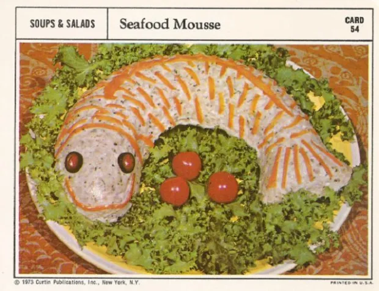

Return home
The art of sea "Seafood Mousse"
Most normal restaurant in Ohio:

Super healthy fish dish that is even smiling back at you.
Seafood Mousse (aka Optimistic Fish) is a dish that will make you optimistic.
Ingredients:
- Fish.
- (Optional but needed) Chilli sauce
- All purpose flour
- Tomatoes
- Salad
- Oreo cookies
Instructions:
- Cover the fish in all purpose flour.
- Fry in high heat until the fish is cooked.
- On a plate, put salad and tomatoes.
- Put the fish on the salad.
- Put the Oreo cookies on the two eyes.
- Decorate and finish the fish with chilli saus (don't forget to make a smiley face).